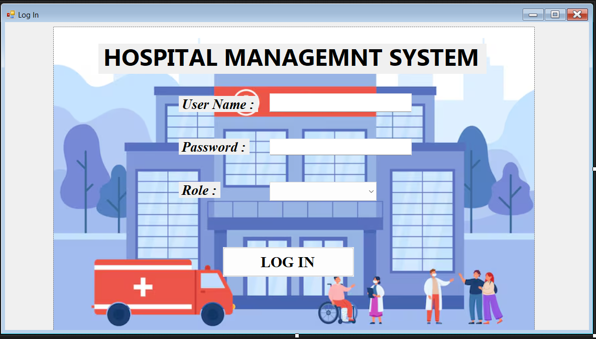
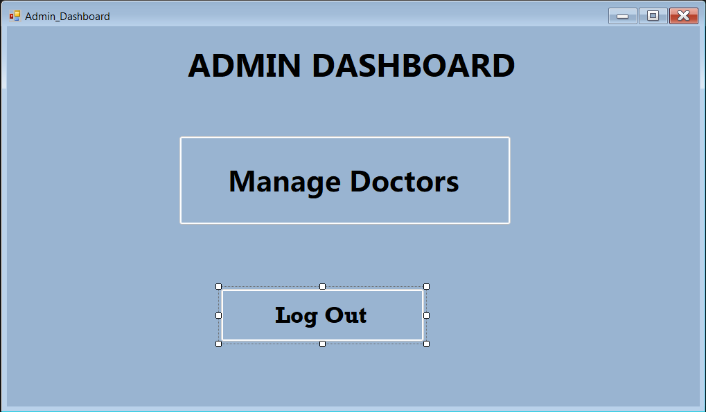
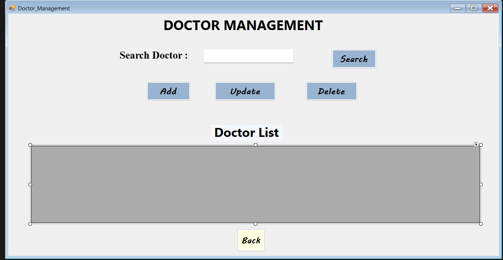
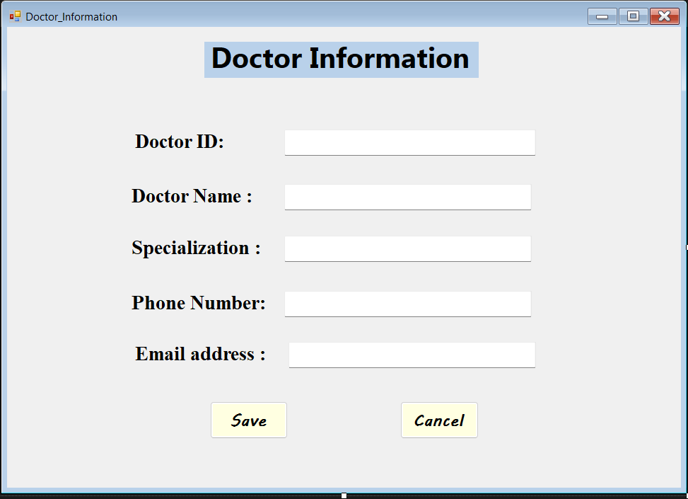
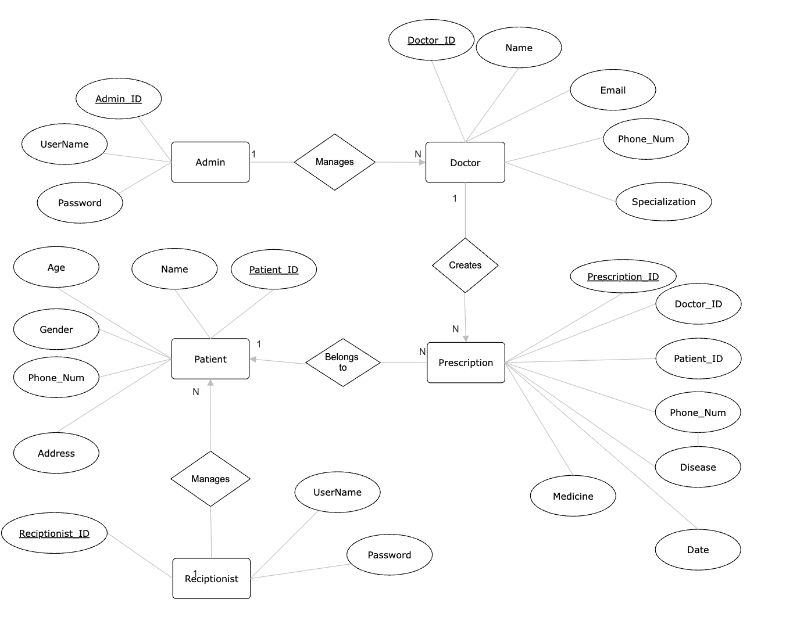

Project overview
The application provides role-specific workflows: administrators manage doctors, receptionists manage patients, and doctors manage prescriptions.
ACADEMIC PROJECT / CASE STUDY
A C# hospital management coursework project featuring workflows for hospital administration, patient management, and prescriptions. The images below document the application interfaces and entity-relationship design.
The application provides role-specific workflows: administrators manage doctors, receptionists manage patients, and doctors manage prescriptions.
Organize hospital information and reduce the need for disconnected manual records by bringing important tasks into a structured application.
C# application developed using Visual Studio with a MySQL database. The project includes an entity-relationship diagram representing hospital data and its relationships.
Contributed to the Hospital Management System development. Specific individual contributions can be edited here to reflect personal implementation accurately.
A role-oriented interface separates administrative, reception, and doctor workflows. This supports a clearer user experience with distinct responsibilities.
Screenshots document the application login interface, admin dashboard, doctor management and doctor information forms. Quantitative testing results have not been provided.




